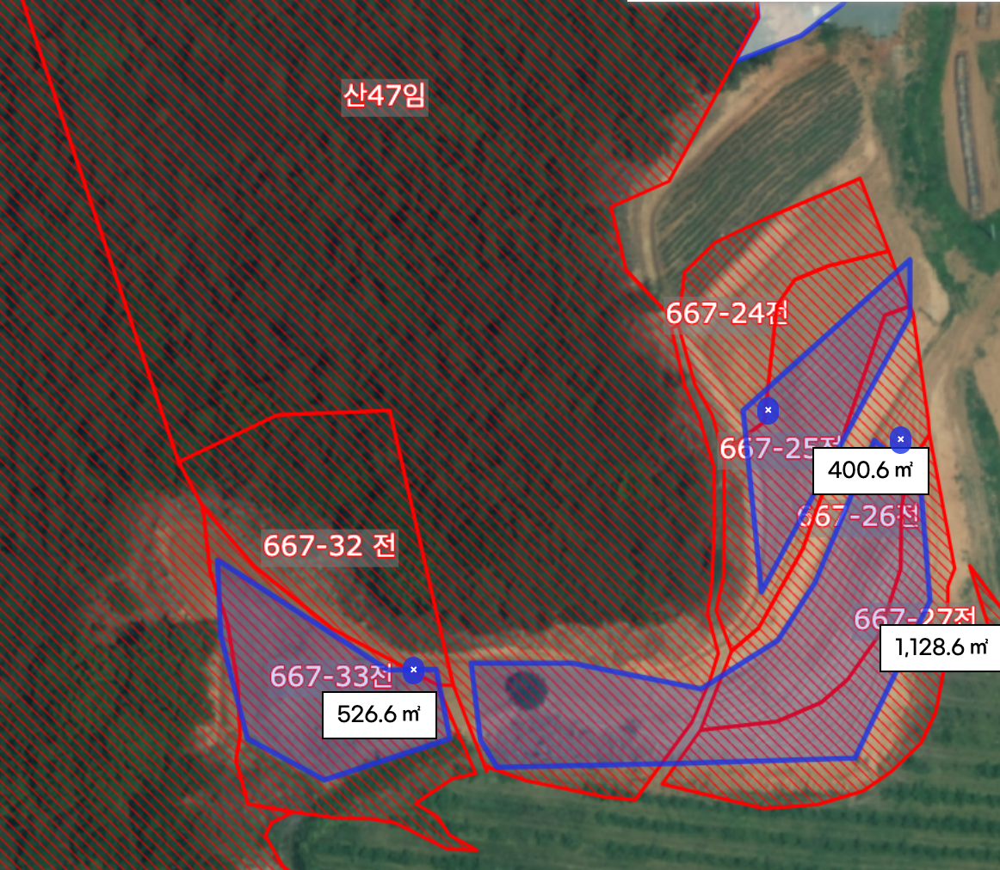
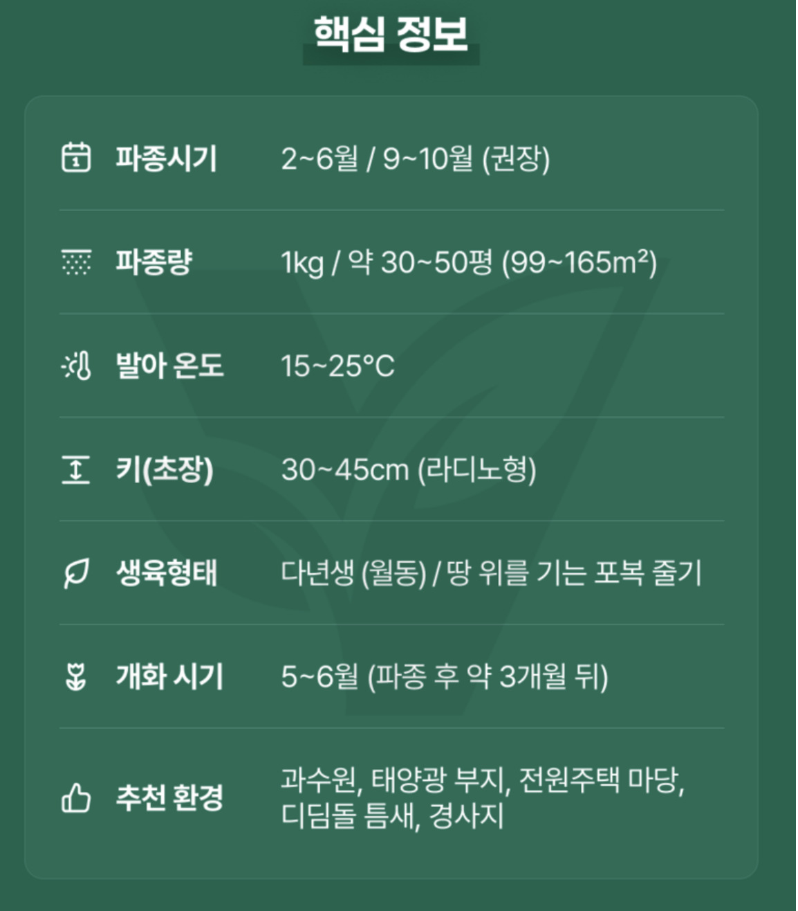
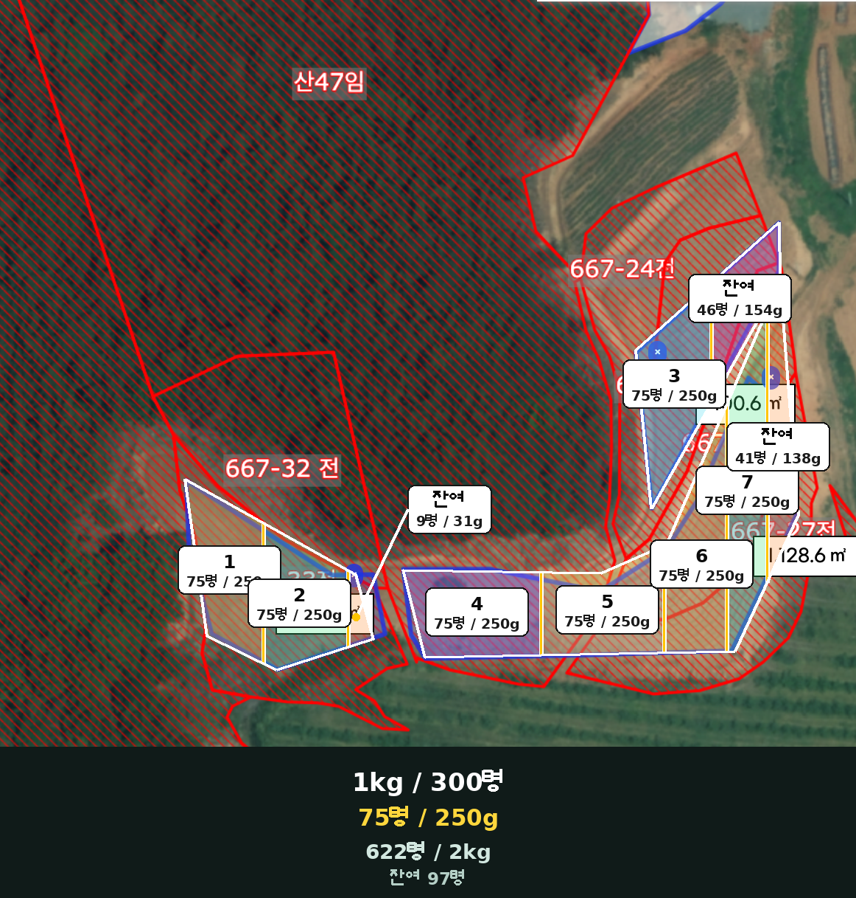

2026.08.18 · 화곡농장
엄나무밭 화이트클로버 파종계획
판매자 질의답변 분석을 반영한 622평 손 살포 실행안
2,055.8㎡표시 면적
약 622평파란 구역
종자 2kg최종 준비량
250g / 75평작업 단위
1. 핵심 결론
최종 실행안
사용자가 정한 1kg/약 300평의 저밀도 도입안. 622평 이론량은 2.07kg이지만 엄나무 반경 50cm와 통로를 제외해 실제 준비량은 2kg으로 잡는다.
사용자가 정한 1kg/약 300평의 저밀도 도입안. 622평 이론량은 2.07kg이지만 엄나무 반경 50cm와 통로를 제외해 실제 준비량은 2kg으로 잡는다.
- 판매자 1kg/30~50평은 빠르고 촘촘한 피복 기준이다.
- 2kg/600평으로 시작하되 첫해가 듬성듬성하거나 잡초 억제가 약할 수 있음을 감수한다.
- 빈 곳은 확인 후 보충하고 포복경과 자연결실로 장기 확산시킨다.
- 코팅종자는 불리지 않고, 마른 보조재와 파종 직전에 섞는다.
- 표면에 뿌려 누르고 흙은 0~5mm만 얇게 덮는다.
- 제초 후에는 잔재물을 걷어 맨흙을 드러내고 약제의 재파종 간격을 확인한다.
2. 면적과 종자 배정
| 구역 | 면적 | 평수 | 2kg 비례 배정 |
|---|---|---|---|
| 왼쪽 | 526.6㎡ | 약 159평 | 약 510g |
| 오른쪽 상단 | 400.6㎡ | 약 121평 | 약 390g |
| 오른쪽 하단 | 1,128.6㎡ | 약 341평 | 약 1,100g |
| 합계 | 2,055.8㎡ | 약 622평 | 2,000g |
| 계획 | 622평 필요량 | 예상 |
|---|---|---|
| 판매자 조밀 기준 | 12.4~20.7kg | 빠른 완전피복 |
| 빠른 피복안 | 약 6.2kg | 1kg/100평 |
| 중간 밀도안 | 약 4.15kg | 1kg/150평 |
| 화곡농장 실행안 | 약 2.07kg | 1kg/300평, 실제 준비 2kg |
3. 75평 작업구역
종자 250g을 약 75평에 사용한다. 1~7번은 각 75평/250g, 잔여는 왼쪽 9평/31g, 상단 46평/154g, 오른쪽 하단 41평/138g의 이론량이다. 이론 합계는 2.07kg이므로 2kg 작업에서는 나무 둘레와 통로를 먼저 제외하고 잔여량을 조금 줄인다.
1~7 75평 기본구역잔여 자투리 구역평 면적 단위
4. 판매자 질의답변 분석
| 날짜 | 주제 | 좋은 정보 | 적용·주의 |
|---|---|---|---|
| 2026-06-04 | 제초 후 파종 | 잔재물을 치우고 맨흙에 접촉, 제초제 재파종 간격 확인 | 600평은 뿌리 전부 굴취보다 예초·갈퀴질·재발생 관리가 현실적 |
| 2026-04-01 | 경사지 | 표면파종 후 발이나 도구로 밀착, 폭우 직전 회피 | 라이그라스 혼파는 급경사의 선택안이며 기본안에서는 제외 |
| 2025-12-28 | 자연번식 | 다년생, 결실과 포복경으로 확산 | 일부 꽃은 씨가 익을 때까지 남김 |
| 2025-09-27 | 품종 | 판매자는 F1이 아닌 조경·녹비용이라고 답변 | 실제 품종은 포장지 종자보증표시 우선; 이미지는 라디노형 |
| 2025-08-02~06 | 코팅·초장 | 코팅종자, 30~45cm | 불림 금지, 줄기 반경 50cm 비움, 필요 시 예초 |
| 2025-08-05 | 모종판 | 노지직파 권장 | 직접 흩어뿌리기 적용 |
| 2023-12-26 | 발아율·파종량 | 판매자 주장 발아율 약 80%, 1kg/30평 | 밭 정착률 보장이 아니며 포장지 검사값 확인 |
| 2023-12-26 | 겨울 파종 | 경주 12~3월 문의에 3월 권장 | 서산도 봄 또는 9~10월 적온 파종이 관리가 쉬움 |
| 2023-09-25 | 과수원 | 판매자 1kg/30평 반복 | 빠른 조밀 피복 기준으로 분리 |
| 2023-03-06 | 물 불림 | 코팅종자는 불리지 않고 바로 파종 | 젖었다면 저장하지 말고 즉시 파종 |
| 2022-10~11 | 늦가을 | 월동 후 이른 봄 출현 가능 | 600평 전면 비닐은 비현실적이라 제외 |
| 2022-04-01 | 밀도 | 다른 판매자도 1kg/30평을 ‘촘촘한 조건’으로 설명 | 목표 피복속도에 따른 수치임을 확인 |
| 공개 내용 없음 | 2025-03-07, 2023-07-08 | 전화상담 완료만 표기 | 근거로 사용하지 않음 |
5. 충돌하는 답변의 최종 해석
| 답변 차이 | 현장 기준 |
|---|---|
| 표면파종 vs 흙을 잘 덮기 | 표면에 뿌려 눌러주고, 흙은 0~5mm만 얇게 |
| 뿌리까지 제거 vs 대면적 작업 | 죽은 잔재물 제거와 토양 접촉을 우선하고 살아난 잡초를 후속 관리 |
| 발아율 80% | 현장 피복률 보장이 아님. 토양 접촉·수분·유실에 따라 낮아짐 |
| 땅속줄기 | 주로 땅 위 포복경이 마디에서 뿌리내려 확산 |
| 비닐 덮기 | 소면적에는 가능해도 600평에는 적용하지 않음 |
6. 황토 단독 배합
확정 배합
종자 1kg당 체로 거른 마른 황토 20kg. 종자 250g＋황토 5kg씩 4묶음으로 나누면 75평씩 총 300평을 작업한다.
종자 1kg당 체로 거른 마른 황토 20kg. 종자 250g＋황토 5kg씩 4묶음으로 나누면 75평씩 총 300평을 작업한다.
| 선택 | 종자 1kg | 250g·75평 | 평가 |
|---|---|---|---|
| 마른 모래 | 15~20kg | 4~5kg | 가장 균일, 바닷모래 금지 |
| 확정: 마른 황토 | 20kg | 5kg | 화곡농장 적용안 |
| 마른 상토 | 50~70L | 12~18L | 가볍고 바람에 날려 차선책 |
| 모래＋황토 대안 | 10kg＋10kg | 2.5kg＋2.5kg | 황토 단독 살포가 불균일할 때만 고려 |
황토는 완전히 말리고 체로 거른다. 젖은 황토, 제초제·농약·고농도 비료가 섞인 흙은 쓰지 않는다.
7. 250g 혼합과 손 살포
1종자 250g 계량
2마른 황토 5kg 준비
33~4번 나눠 뒤집어 혼합
4혼합물 절반으로 분할
5가로 방향 1회
6세로 방향 1회
- 반 움큼씩 허리 높이에서 부채꼴로 조금씩 턴다.
- 살포 폭 1.5~2m와 보행 속도를 일정하게 한다.
- 분리되지 않도록 수시로 통 바닥까지 다시 섞는다.
- 한 움큼 무게보다 250g 한 묶음을 75평에서 고르게 소진하는 것이 중요하다.
손 계량
코팅종자만 한 움큼은 대략 30~60g, 종자·황토 혼합물은 대략 100~180g일 수 있으나 편차가 크다. 5~10번 움켜 쥔 총무게를 재어 평균을 구한다.
코팅종자만 한 움큼은 대략 30~60g, 종자·황토 혼합물은 대략 100~180g일 수 있으나 편차가 크다. 5~10번 움켜 쥔 총무게를 재어 평균을 구한다.
250mL 우유갑 ≠ 250g
mL는 부피이고 g은 무게다. 코팅량과 채움 상태에 따라 달라지므로 저울로 실제 250g을 담아 높이를 표시해 사용한다.
mL는 부피이고 g은 무게다. 코팅량과 채움 상태에 따라 달라지므로 저울로 실제 250g을 담아 높이를 표시해 사용한다.
8. 제초 후 파종 순서
- 사용한 제초제 라벨의 파종·재식 가능 기간을 확인한다.
- 마른 잡초를 낮게 예초하고 두꺼운 잔재물을 걷어낸다.
- 갈퀴로 표면만 얕게 긁어 맨흙에 씨가 닿게 한다.
- 엄나무 줄기 반경 50cm와 통로를 비운다.
- 9월~10월 초, 강풍·집중호우가 없는 때 표면 살포한다.
- 발이나 롤러로 누르고 필요하면 흙을 0~5mm만 얇게 덮는다.
- 발아 전 표면이 마르지 않도록 약하게 관수한다.
- 2~4주간 빈 곳·유실·잡초 재발생을 보고 보충한다.
9. 체크리스트
10. 이미지 자료



이미지를 클릭하면 크게 볼 수 있다. 구역 경계는 지도 면적비를 바탕으로 한 작업용 근사선이다.
11. 근거와 한계
- 구매한 화이트클로버 상품
- 사용자가 제공한 2022~2026년 판매자 공개 질의답변과 상품 표시 이미지를 검토했다.
- 판매자 답변은 재배 참고정보이며 공인 시험성적서나 밭 발아 보증이 아니다.
- 코팅 중 실제 종자 비율·품종명·검사일은 포장지 종자보증표시가 우선이다.
최종 실행안
종자 1kg 한 포대당 체로 거른 마른 황토 20kg을 사용한다. 종자 250g＋황토 5kg씩 4묶음으로 나누고, 1묶음을 약 75평에 가로·세로 교차 살포한다. 전체 종자 2kg에는 황토 총 40kg이 필요하다. 코팅종자는 불리지 않는다. 마른 잡초 잔재물을 치우고 맨흙에 닿게 뿌린 뒤 눌러 밀착하며, 흙은 0~5mm만 얇게 덮는다.